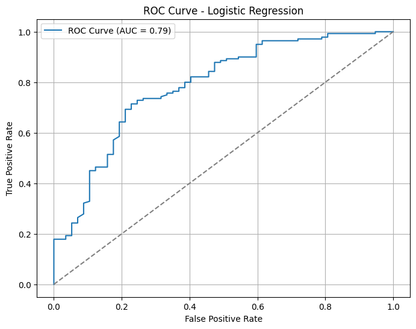

🧾 Logistic Regression Classifier – Report
1. Objective
This section evaluates a Logistic Regression model applied to classify companies by their financial strength using normalized financial ratios.
- Class 0: Financially Weak
- Class 1: Financially Strong
2. Model Configuration
- Algorithm: Logistic Regression
- Solver: lbfgs
- Max Iterations: 1000
- Feature Scaling: StandardScaler applied to all input features
- Training/Testing Split: 80/20 stratified split
📊 Classification Report
| Class |
Precision |
Recall |
F1-score |
Support |
| 0 (Weak) |
0.68 |
0.40 |
0.51 |
57 |
| 1 (Strong) |
0.79 |
0.92 |
0.85 |
140 |
- Accuracy: 77.2%
- Macro Avg F1-score: 0.68
- Weighted Avg F1-score: 0.75
📌 Confusion Matrix
|
Predicted Weak |
Predicted Strong |
| Actual Weak |
23 |
34 |
| Actual Strong |
11 |
129 |
The model:
- Correctly classified 129 out of 140 strong companies
- Correctly identified only 23 out of 57 weak companies, indicating moderate difficulty in detecting the minority class
4. ROC Curve Analysis

Interpretation: The ROC curve rises well above the diagonal baseline, indicating that the model has good discriminatory ability between weak and strong companies based on predicted probabilities.
5. Conclusion
Logistic Regression performs well overall, with solid accuracy and excellent recall for strong companies (92%). However, it struggles to detect financially weak companies, achieving only 40% recall for that class. This limits its utility in risk-sensitive applications where missing weak companies is costly.
✅ Strengths:
- Well-calibrated predicted probabilities (AUC = 0.79)
- Strong performance for majority class
❌ Weaknesses:
- Poor recall and F1-score for the weak class (Class 0)
- Moderate class imbalance affects sensitivity